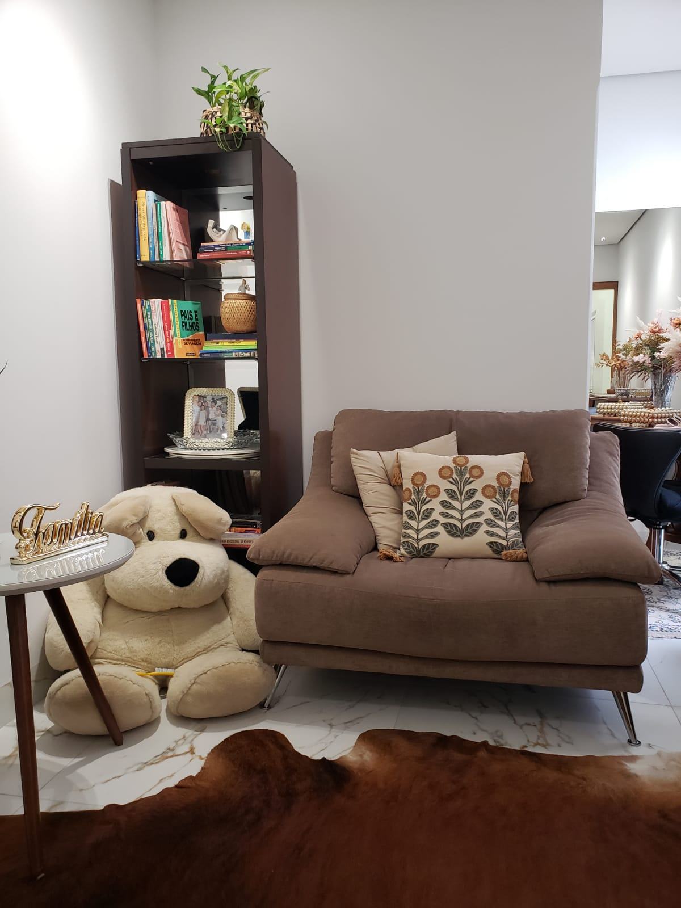
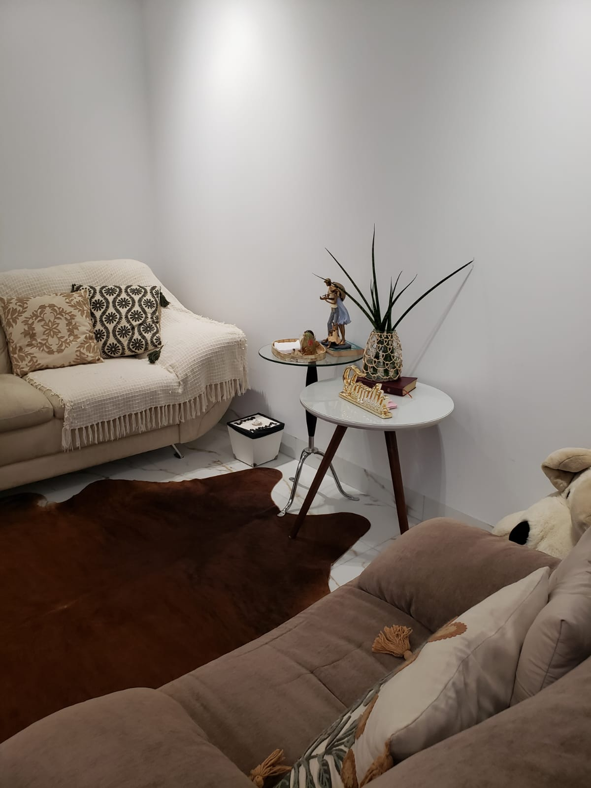
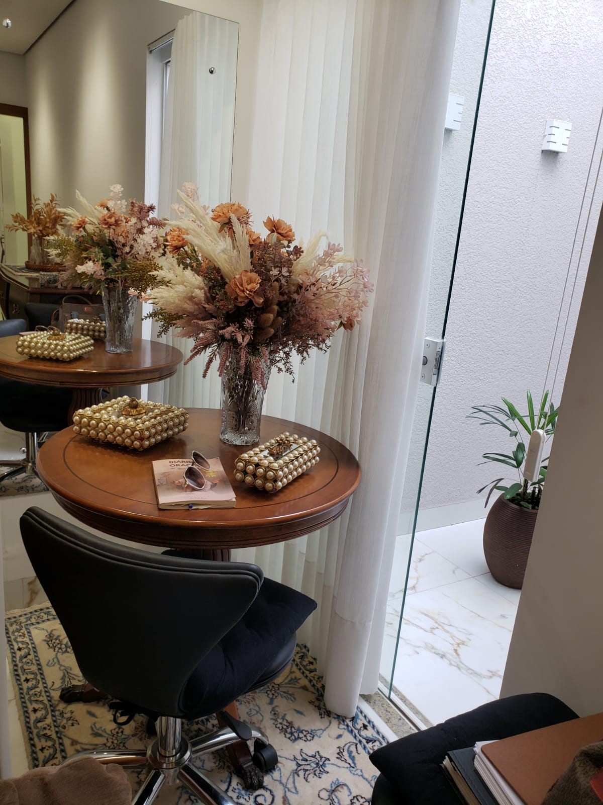
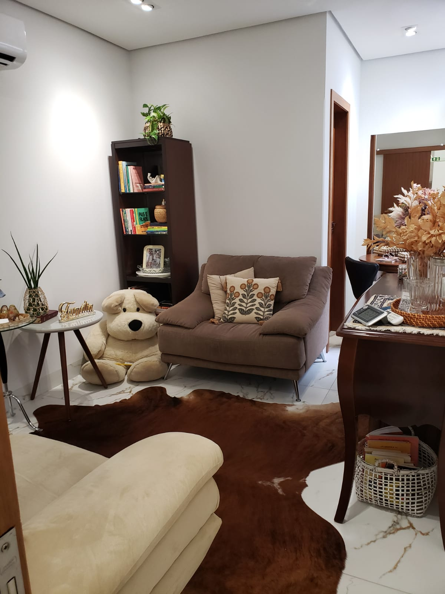
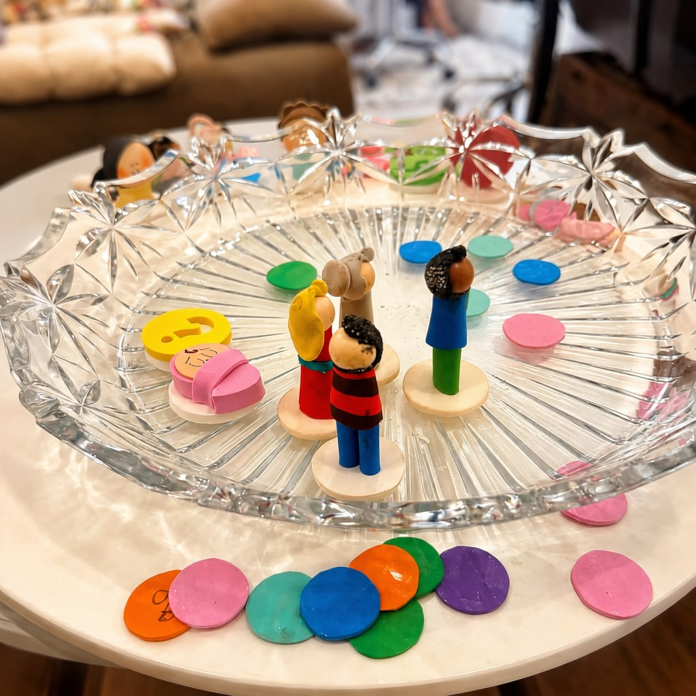

Terapia Individual
Um espaço de acolhimento para compreender emoções, fortalecer o autoconhecimento e enfrentar os desafios da vida com mais equilíbrio.
A terapia é um convite para olhar com mais cuidado para si mesmo, compreender emoções e construir caminhos mais conscientes para viver.
Meu propósito é oferecer um espaço de escuta acolhedora, onde cada pessoa possa compreender sua história, fortalecer seus recursos emocionais e encontrar novas possibilidades para enfrentar os desafios da vida.
Acredito que cada processo terapêutico é único. Por isso, o atendimento é construído com respeito, ética, empatia e atenção às necessidades de cada paciente.
Quero agendar uma consultaUm espaço de acolhimento para compreender emoções, fortalecer o autoconhecimento e enfrentar os desafios da vida com mais equilíbrio.
Auxilia casais na construção de uma comunicação mais saudável, resolução de conflitos e fortalecimento do relacionamento.
Promove o diálogo entre os membros da família, buscando compreender padrões de relacionamento e fortalecer os vínculos familiares.
Como lidar com pensamentos acelerados e recuperar a tranquilidade.
Entendendo o medo e aprendendo a agir apesar dele.
Comportamentos que impedem seu crescimento e como identificá-los.
Por que mulheres competentes duvidam tanto de si mesmas.
Construindo uma visão mais saudável sobre quem você é.
Um espaço para compreender o sofrimento emocional, acolher seus sentimentos e encontrar novas formas de lidar com o cotidiano.
Compreendendo conflitos, padrões de comunicação e diferentes formas de fortalecer a relação.
Apoio para lidar com mudanças, escolhas e novos caminhos profissionais.
Acolhendo as mudanças, adaptações e desafios de uma nova fase da vida.
Cada pessoa possui uma história e uma necessidade diferente. Outras demandas também podem ser acolhidas durante o processo terapêutico.
Cada encontro é um espaço de acolhimento e reflexão, permitindo compreender emoções, pensamentos e comportamentos de forma respeitosa e sem julgamentos.




Compreender seus sentimentos, necessidades e comportamentos para fazer escolhas mais conscientes.
Desenvolver recursos para lidar melhor com os desafios da rotina e das relações.
Construir hábitos e estratégias que promovam uma vida mais leve e equilibrada.
A Constelação Familiar é uma abordagem que busca ampliar a compreensão sobre conflitos, relacionamentos e padrões que podem influenciar diferentes áreas da vida.
O processo favorece novos olhares sobre questões familiares, emocionais e pessoais, sempre respeitando a individualidade e o momento de cada pessoa.
Quero saber mais
A terapia não muda quem você é. Ela ajuda você a reconhecer sua força, compreender sua história e construir novas possibilidades para seguir em frente.
O primeiro encontro é um momento para conhecer sua história, compreender sua demanda e conversar sobre como será o acompanhamento terapêutico.
Sim. Os atendimentos podem ser realizados online ou presencialmente, conforme a disponibilidade e a necessidade.
Em média, cada sessão tem duração de 30 a 50 minutos.
Basta entrar em contato pelo WhatsApp para verificar os horários disponíveis e agendar seu atendimento.
Será um prazer acolher você e caminhar ao seu lado nesse processo de cuidado e autoconhecimento.
Caso tenha dúvidas ou deseje agendar uma consulta, fale comigo pelo WhatsApp.
Dar o primeiro passo pode parecer difícil, mas você não precisa fazer isso sozinho(a).
Entre em contato pelo WhatsApp para tirar suas dúvidas ou verificar a disponibilidade de horários.
Falar pelo WhatsApp